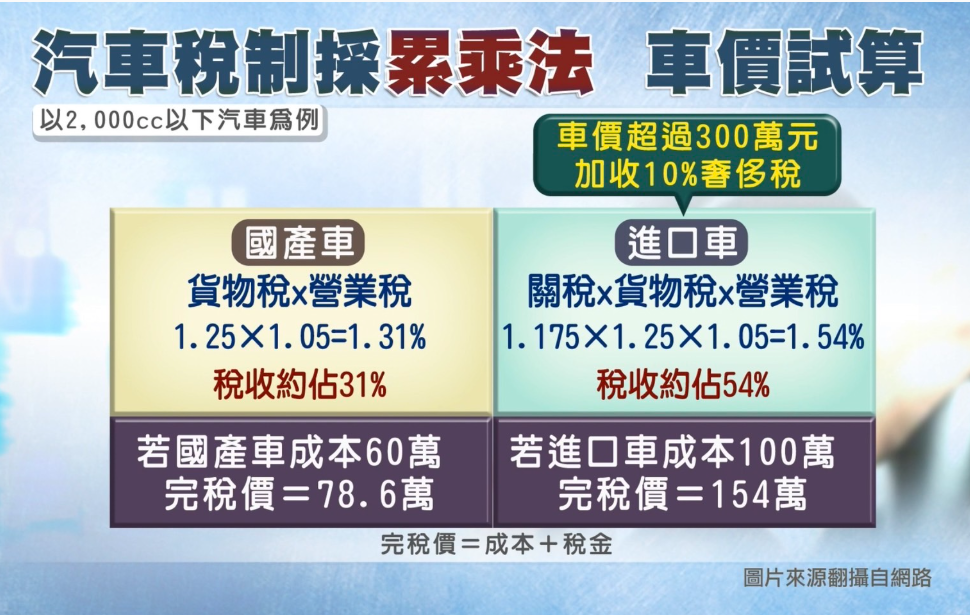
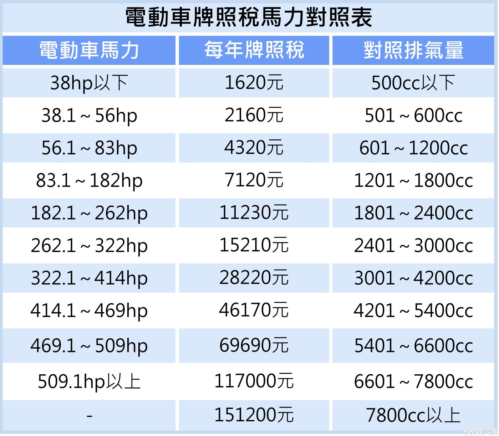

購置小客車稅費智慧試算｜升級AI導覽(須登入Google帳戶)
免稅特種車補繳貨物稅試算
車輛購置稅費：進口稅(關稅)、貨物稅、營業稅
 |
| 汽車稅制與車價試算 |
- 進口貨品稅則稅率查詢系統
- 進口稅免稅之特種車：救護車、救火車及救火雲梯車。
- 進口稅2.5%之特種車：灑水車、道路清潔車、清溝車、清溝吸泥車、掃街車、垃圾車、水肥車。
- 貨物稅條例第12條及減徵或免徵規定：
- 供公共安全 、公共衛生 使用特種車免貨物稅。
- 至119年底止，購買完全以電能為動力之新車（含汽、機車）並完成領牌者，小客車於140萬元內免徵，超過部分減半課徵，其餘車輛全額免徵。
- 至119年底止，購買2,000cc以下全新小客車，每輛定額減徵5萬元；報廢登記滿1年且出廠10年以上之舊車，並於前後6個月購買新車可再減徵5萬元。
- 免稅特種車移供他用時應補徵貨物稅：免稅特種車補繳貨物稅試算
- 免稅特種車禁止不當移用
- 監察院糾正案：092交正0015號。
- 媒體報導：救災車當公務車 稅賦署罰80萬。
車輛持有稅費：使用牌照稅、燃料使用費、車輛檢驗費
 |
| 電動車牌照稅馬力對照表 |
- 使用牌照稅：
- 燃料使用費：
- 公路法第27條 汽燃費 更名為 公路使用養護安全管理費
- 汽車燃料使用費徵收及分配辧法第4條：
- 免徵汽車燃料使用費：
- 領有特種車行車執照並免徵使用牌照稅之消防車、救災車、救護車、憲警巡邏車、警備車、偵防車、勘驗車、偵緝車、灑水車、水肥車、垃圾車及運送郵件之汽車。
- 電動汽車。
- 車輛檢驗費：
- 大型汽車（含曳引車）檢驗費新臺幣600元。
- 小型汽車(含古董車)、預備引擎等檢(覆)驗費新臺幣450元。
- 拖車檢驗費新臺幣450元。
- 重型及輕型機車檢驗費新臺幣200元。
- 大型重型機車(含古董車)檢驗費新臺幣200元。
- 汽車預備引擎檢驗費新臺幣450元。
- 十年以上自用小客車當年度第二次檢驗費新臺幣300元。
本府規定
- 車管要點第14點：
- 各機關公務車輛應注意依使用牌照稅法、公路法之規定，定期繳納相關稅費，並依規定實施定期檢驗，避免逾期。
- 依法得免徵貨物稅及前項稅費之車輛，應於領牌前向稅費稽徵主管機關申請免徵。貨物稅完稅之已領牌車輛，如經車輛異動登記程序取得免徵資格，應向稅費主管機關申請免徵後續相關稅費。
- 經主管機關核准免繳相關稅費之特種車，須依原核准目的使用，不得擅自移作他用。因移撥、轉讓等因素移作他用時，應向主管機關申報繳納相關稅費。
- 各機關公務車輛車身顏色及加漆標識，應符合道路交通安全規則第四十二條之規定。
-
- 因應立法院三讀通過公路法部分條文修正案，將現行「汽車燃料使用費」更名為「公路使用養護安全管理費」，惟其施行日期尚未公布，未正式施行前，仍將以原有名稱課徵規費，爰配合修正第一項及第二項之規定。